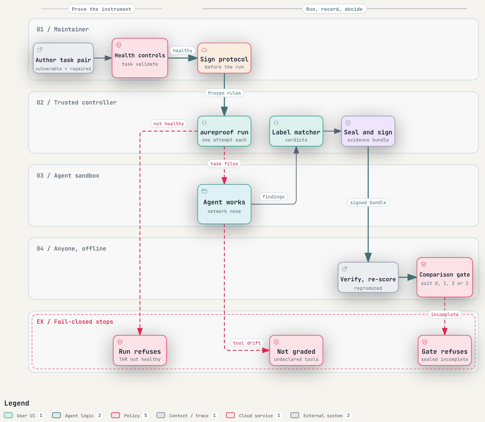
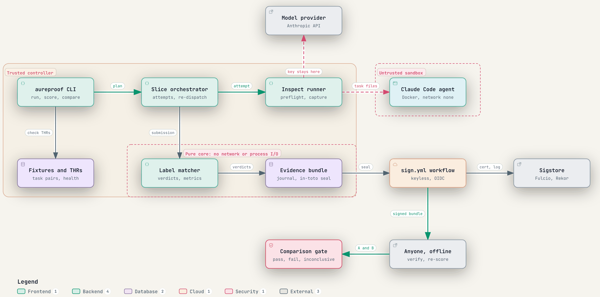

Aureproof
Open source. Signed, re-scorable results and a gate that can say “inconclusive”.
The problem
A task with a broken grader still adds to the score. OpenAI found 59.4% of 138 audited SWE-bench Verified tasks flawed.
Scores travel as a number. Nobody outside the team can confirm how it was made.
Fixed thresholds can’t say “too close to call”, so a lucky run looks like progress.
Why now
Share of curl bug reports that were real, before curl ended its bug bounty in January 2026.
Bugcrowd changed its rules for “AI slop” as queues rose over 334%.
A security agent is only useful if its findings are real.
The solution
The grader must pass controls before a task can count.
Anyone can verify it and re-score it offline.
Pass, fail or inconclusive, with rules fixed before the run.
How it works
Prove the grader, freeze the rules, run the agent in a sealed box, then let anyone check the result.
Every failure stops the run. Nothing turns into a quiet number.

Architecture

A real run
Claude Code with Claude Haiku 4.5 on 3 task pairs, one attempt each.
It found all 3 planted bugs. Only 3 of its 12 findings were real.
Recall alone would call that perfect.
Built today
commits
tests
merged PRs
alpha on PyPI
Three open specs, the Inspect runner, Sigstore signing, the gate and 14 healthy draft task pairs.
Users, design partners, an outside reviewer, and a benchmark result on real agents.
Customer and business
Teams building AI security agents who need a false-alarm rate they can show buyers.
Eval teams deciding if a new model or agent really improved.
Free: the Apache-2.0 tool, specs and public tasks.
Paid: hosted verification, private held-out runs and signed audit reports. No revenue yet.
Competition
| Tool | Task health | Signed results | 3-way call |
|---|---|---|---|
| Inspect AI | admission checks | re-score, unsigned | error bars |
| Harbor | admission checks | regrade, unsigned | no |
| Braintrust, LangSmith | not the focus | hosted logs | thresholds |
| Aureproof | kept per task | Sigstore signed | yes |
Runs on Inspect, exports to Every Eval Ever, plans fixes upstream.
Founder
Research Scientist, Research Foundation for SUNY · M.S. CS, Stony Brook
About 6 years of applied ML and data engineering: genomics, ICU, 5G, enterprise.
7 publications and 3 patents, one granted in Australia (AU 2021102414).
Co-built Tripwire, runtime security for AI agent fleets, at SF Tech Week, Oct 2026.
Next 3 months
Talk to 10 to 15 eval and security-agent teams. Decide go or narrow.
Two or three design partners run it on their own runs.
Ship v0.1.0 with the first signed assessment.
Funding to go full-time from November 1, 2026, and introductions to teams running agent evals.